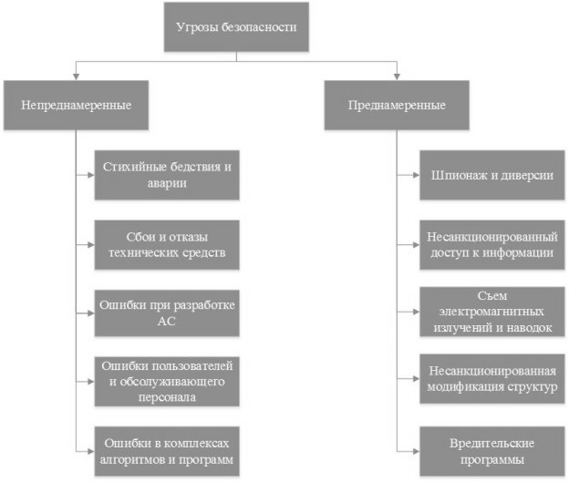

uname -r4.4.0-19041-MicrosoftПонятие угрозы безопасности информации. Основные угрозы безопасности автоматизированной системе.
Угроза (безопасности информации) - совокупность условий и факторов, создающих потенциальную или реально существующую опасность нарушения безопасности информации.

Понятие безопасности и уязвимости информационной системы, виды уязвимостей. Безопасность информационной системы – свойство, заключающееся в способности системы обеспечить конфиденциальность, целостность и доступность информации.
Уязвимость - свойство информационной (автоматизированной) системы, обуславливающее возможность реализации угроз безопасности обрабатываемой в ней информации
0-day - опасна, ничем не закрыть, кроме выключения порта
1-day - решение уже вышло, но пользователь не установил обновление
…что-то еще??
Понятия конфиденциальности, целостности и доступности.
Конфиденциальность - обеспечение доступа к информации только авторизованным пользователям.
Целостность - обеспечение достоверности и полноты информации и методов ее обработки.
Доступность - обеспечение доступа к информации и связанным с ней активам авторизованных пользователей по мере необходимости.
Понятие уязвимости проектирования, примеры. Понятие эксплойта, виды эксплойтов.
Уязвимости проектирования наиболее серьезны — они обнаруживаются и устраняются с большим трудом. В этом случае уязвимость свойственна проекту или алгоритму и, следовательно, даже совершенная его реализация (что в принципе невозможно) не избавит от заложенной в нем слабости. Например, уязвимость стека протоколов TCP/IP. Недооценка требований по безопасности при создании этого стека протоколов привела к тому, что не проходит месяца, чтобы не было объявлено о новой уязвимости в протоколах стека TCP/IP. И раз и навсегда устранить эти недостатки уже невозможно — существуют только временные или неполные меры. Однако бывают и исключения. Например, внесение в проект корпоративной сети множества модемов, облегчающих работу персонала, но существенно усложняющих работу службы безопасности. Это приводит к появлению потенциальных путей обходов межсетевого экрана, обеспечивающего защиту внутренних ресурсов от несанкционированного использования. И обнаружить, и устранить эту уязвимость достаточно легко.
RCE - удаленное выполнение кода
LPE - локальное повышение привилегий
Sandbox Escape - результат эксплуатации уязвимостей, позволяющих из изолированной среды — песочницы — выполнить вредоносный код за ее пределами.
Эксплойты — это подвид вредоносных программ. Они содержат данные или исполняемый код, способный воспользоваться одной или несколькими уязвимостями в программном обеспечении на локальном или удаленном компьютере. эксплоит.касперский
Пример: Nuclear Pack — поражает жертв эксплойтами Java и Adobe PDF, а также подсаживает Caphaw — печально известный банковский троян .
Понятие уязвимости реализации, примеры. Понятие эксплойта, виды эксплойтов.
Уязвимости реализации состоят в появлении ошибки на этапе реализации в программном или аппаратном обеспечении корректного с точки зрения безопасности проекта или алгоритма. Яркий пример такой уязвимости — “переполнение буфера” во многих реализациях программ, например, sendmail SENDMAIL или Internet Explorer. Обнаруживаются и устраняются подобного рода уязвимости относительно легко. Если нет исходного кода программного обеспечения, в котором обнаружена уязвимость, то ее устранение заключается или в обновлении версии уязвимого ПО или в полной его замене или отказе от него.
RCE - удаленное выполнение кодаLPE - локальное повышение привилегийSandbox Escape - результат эксплуатации уязвимостей, позволяющих из изолированной среды — песочницы — выполнить вредоносный код за ее пределами.Эксплойты — это подвид вредоносных программ. Они содержат данные или исполняемый код, способный воспользоваться одной или несколькими уязвимостями в программном обеспечении на локальном или удаленном компьютере. эксплоит.касперскийПример: Nuclear Pack — поражает жертв эксплойтами Java и Adobe PDF, а также подсаживает Caphaw — печально известный банковский троян .
Понятие уязвимости конфигурации, примеры. Понятие эксплойта, виды эксплойтов.
Уязвимости конфигурации состоят в ошибках при конфигурации программного или аппаратного обеспечения. Этот вид наряду с уязвимостями реализации является самой распространенной категорией уязвимостей. Существует множество примеров таких уязвимостей. К их числу можно отнести, например, доступный, но не используемый на узле сервис Telnet, разрешение “слабых” паролей или паролей длиной менее 6 символов, учетные записи и пароли, остановленные по умолчанию (например, SYSADM или DBSNMP в СУБД Oracle), и т. д. Локализовать и исправить такие уязвимости проще всего. Основная проблема — определить, является ли конфигурация уязвимой.
ПРИМЕР: Как сообщило агентство Росбизнесконсалтинг, 8 сентября 2000 г. компания Western Union, специализирующаяся на денежных переводах, объявила о том, что из-за “человеческого фактора” неизвестному злоумышленнику удалось скопировать информацию о кредитных карточках около 15,7 тысяч клиентов ее Web-сайта. Представитель Western Union сообщил, что взлом произошел, когда во время проведения регламентных работ были открыты системные файлы, доступ к которым во время штатной работы сайта имеют только администраторы. Western Union настаивает, что это не проблема архитектуры системы защиты, это была ошибка персонала.
Модели внешних преднамеренных угроз информационной безопасности. Основные этапы методологии MITRE ATT&CK.
(Это база знаний с тактиками, техниками, процедурами. матрица enterprise, у каждой техники есть ID)
Reconnaissance - разведка
Initial access - первоначальный доступ
Execution - выполнение кода
Persistence - закрепление
Privilege Escalation - повышение привилегий (запускаем)
Defence Evasion - есть СЗИ, техники
Credential Access - логины, пароли
Discovery - обнаружение, что в закладках сложено (Windows Active Directory, контроллер домена)
Lateral Movement - горизонтальное перемещение
Collection - сбор информации
Command and control - как организовать централизованное управление агентами
Exfiltration - незаметное извлечение данных из внутренней системы организации (обмануть DLP)
Impact - выкачивание файлов, выложить в открытый доступ
Модели внешних преднамеренных угроз информационной безопасности. Основные этапы методологии Penetration Testing Execution Standard.
Pre-engagement Interactions (подготовка меропр.)
Intelligence Gathering (сбор информации)
Vulnerability Analysis (анализ уязвимостей)
Exploitation (эксплуатация)
Post Exploitation (постэксплуатация)
Reporting (разработка отчетности)
Модели внешних преднамеренных угроз информационной безопасности. Основные этапы методологии Lockheed Martin Cyber Kill Chain.
Reconnaisance (разведка)
Weaponization (вооружение???)
Delivery
Exploitation
Installation
Command & Control
Actions on objects
Понятие OSINT. Цели, методы, средства проведения OSINT.
OSINT (Open Source INTelligence) — разведка по открытым источникам.
Цель: поиск, выбор и сбор разведывательной информации из общедоступных источников, а также её анализ (Приведите обнаруженную информацию в форму, пригодную для применения).
Инструменты: GoogleDorks, Shodan, Censys, Zoomeye
a)Google Dork или Google Dork Queries (GDQ) – набор запросов для выявления грубейших дыр в безопасности. Они содержат все то, что не спрятано от поисковых роботов.
b)Shodan (Sentient Hyper-Optimized Data Access Network, рус. Разумная гипероптимизированная сеть доступа к данным) – поисковая система, которая позволяет найти публично доступные устройства в Интернет
c)Censys – новый поисковик по интернету вещей (рисунок 2). Подобно Shodan, он опрашивает все публично доступные IP-адреса и протоколирует их отклики. В результате создается своеобразная карта Интернета, на которой можно искать любые устройства с сетевым интерфейсом, изучать характер распространения уязвимостей.
Понятие поиска и анализа уязвимостей. Цели, методы и средства.
Поиск уязвимостей -
Анализ уязвимостей - организованный процесс поиска уязвимых мест, угроз, потенциальных способов их осуществления и моделей работы злоумышленников, вовлеченных в эти процессы.
Цели:
Методы:
Средства:
Уязвимости веб-приложений. Уязвимости OWASP Top 10.
Open Web Application Security Project (OWASP) – открытый проект по обеспечению безопасности приложений, все материалы которого доступны бесплатно на веб-сайте некоммерческой организации OWASP Foundation. Поставляемые материалы включают документацию, мероприятия, форумы, проекты, инструменты и видео, такие как OWASP Top 10, веб-протоколы OWASP CLASP и OWASP ZAP, а также сканер веб-приложений с открытым исходным кодом.
В последнем отчете OWASP перечислены 10 основных уязвимостей:
Инъекции (Injections).
Нарушенная аутентификация (Broken Authentication).
Раскрытие критически важных данных (Sensitive Data Exposure).
Внешние объекты XML (XXE) (XML External Entities (XXE)).
Нарушенный контроль доступа (Broken Access control).
Неправильная конфигурация безопасности (Security misconfigurations).
Межсайтовый скриптинг (XSS) (Cross Site Scripting (XSS)).
Небезопасная десериализация (Insecure Deserialization).
Использование компонентов с известными уязвимостями (Using Components with known vulnerabilities).
Недостаточно подробные журналы и слабый мониторинг (Insufficient logging and monitoring).
Назначение и основные функции TIP OpenCTI.
Назначение и основные функции Zeek.
Сбор метаинформации сетевого трафика (DNS.log, FTP.log, DHCP.log, HHTP, SSL, -файлы; сертификаты) Zeek генерирует довольно много журналов Zeek — это пассивный анализатор сетевого трафика с открытым исходным кодом. Многие операторы используют Zeek в качестве монитора сетевой безопасности (NSM) для расследования подозрительной или вредоносной активности. Zeek также поддерживает широкий спектр задач анализа трафика, выходящих за рамки безопасности, включая измерение производительности и устранение неполадок. проанализировать PCAP-файл:
zeek -r file.pcap -CВстроенные средства опреационной системы Linux для сбора информации о состоянии вычислительной системы.
Версия ядра
Все сведения о ядре
Linux polyanskaya 4.4.0-19041-Microsoft #2311-Microsoft Tue Nov 08 17:09:00 PST 2022 x86_64 x86_64 x86_64 GNU/LinuxИспользуемый дистрибутив
No LSB modules are available.
Distributor ID: Ubuntu
Description: Ubuntu 20.04 LTS
Release: 20.04
Codename: focalМодель процессора
model name : AMD Ryzen 5 5500U with Radeon Graphics
model name : AMD Ryzen 5 5500U with Radeon Graphics
model name : AMD Ryzen 5 5500U with Radeon Graphics
model name : AMD Ryzen 5 5500U with Radeon Graphics
model name : AMD Ryzen 5 5500U with Radeon Graphics
model name : AMD Ryzen 5 5500U with Radeon Graphics
model name : AMD Ryzen 5 5500U with Radeon Graphics
model name : AMD Ryzen 5 5500U with Radeon Graphics
model name : AMD Ryzen 5 5500U with Radeon Graphics
model name : AMD Ryzen 5 5500U with Radeon Graphics
model name : AMD Ryzen 5 5500U with Radeon Graphics
model name : AMD Ryzen 5 5500U with Radeon Graphics Крайние 30 строк системных логов
[ 0.037250] Microsoft 4.4.0-19041.2311-Microsoft 4.4.35
[ 0.200631] <3>init: (1) ERROR: ConfigInitializeCommon:665: Failed to mount /usr/lib/wsl/drive
[ 0.200642] : 19
[ 0.201002] <3>init: (1) ERROR: ConfigInitializeCommon:665: Failed to mount /usr/lib/wsl/lib
[ 0.201009] 19Защита от локального НСД. Типовые практики защиты.
а) Минимизация поверхности атаки:
б) Сегментация активов - разделение сценариев работы (инструмент - сёрфинг/раб. с док./администр.)
в) Ограничение полномочий пользователей - только необходимые для работы привилегии
Защита от атак уровня приложений. Web Application Firewall.
веб-приложения - OWASP - open worldwide application security project
API - application protocol interface
WAF - это протокол уровня приложений
Защита от атак уровня приложений. Database Access Firewall.
веб-приложения - OWASP - open worldwide application security project
API - application protocol interface
DAF - это протокол уровня приложений
Понятие компрометации через цепочки поставок. Примеры.
(? Supply Chain Attacks ??)
Понятие перечня компонентов программного обеспечения (SBOM – Software Bill of Materials). Форматы описания SBOM.
*SBOM - перечень компонентов ПО
Форматы: [yaml, json…?]
b) OWASP “Cyclone DX”
c) NIST “Software Mitigations Identification (SWID) tags”
?? SCA - Software Composition Analysis - анализ компонентов ПО
Мониторинг информационной безопасности. Виды источников информации для мониторинга.
к
Мониторинг информационной безопасности. Средства сбора информации о сетевых событиях.
к
Мониторинг информационной безопасности. ELK Stack, Opensearch – состав, назначение.
к
Система стандартов в области защиты информации: структура, назначение, основные понятия.
Система стандартов в области защиты информации. ГОСТ Р 58833-2020: структура, назначение, основные понятия.
Система стандартов в области защиты информации. ГОСТ Р 58833-2020. Виды аутентификации.
Система стандартов в области защиты информации. Уровни доверия аутентификации. Нормативные документы.
Сетевые средства защиты информационных систем.
Понятие хоста. Хостовые средства защиты информационных систем.
Хост — это узел сети (физическая единица компьютерной техники подключенная к сети). Какой сети? Любой работающей по принципу клиент-сервер.
Host-based intrusion detection system (HIDS)
Хостовая система обнаружения вторжения выполняет слежение за всеми событиями, происходящими в компьютерной системе на хосте, проверяет к каким ресурсам программа обращается и может обнаружить, к примеру, что текстовый процессор начал менять базу паролей. HIDS является программой. Приведем пример подобных систем:
OSSEC;
Tripwire;
Samhain;
Splunk.
Понятие воспроизводимых исследований и воспроизводимых отчетов. Основные программные средства обеспечения воспроизводимых исследований.